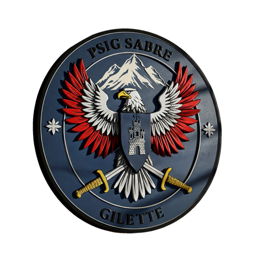

A. Préparation de la reconnaissance
Principe :
La reconnaissance ne s'improvise pas. Elle est généralement conduite par le chef de groupe accompagné d'un membre de la cellule effraction, nécessitant des prises de renseignements préalables.
A.1 Renseignements Opérationnels
Volet Procédural
- Cadre d'enquête : Quelles sont mes possibilités d'actions ?
- Ai-je une géolocalisation par téléphonie ?
- Ai-je le << vu/pris >> ? L'enquêteur m'autorise-t-il l'interpellation en cours de reconnaissance si je croise l'adversaire ?
Volet Environnemental (1/2)
- Ai-je une photo de l'adversaire ? (Afin de le reconnaître si je le croise).
- Le service enquêteur connaît-il ses habitudes ? (travail, sorties, véhicule utilisé + plaque) : Maximiser mes chances de ne pas être « détronché ».
- État d'esprit de l'adversaire ? : Se sait-il recherché ? Est-il méfiant ? Antécédents avec FDO.
- Situation du domicile ? : Cité sensible ? Voisinage défavorable à notre action ? Secteur isolé ?
A.1 Renseignements (suite) et Divers
Volet Environnemental (2/2)
- L'adversaire est locataire : puis-je récupérer la clé de certains ouvrants (badge d'accès, double des clés, plan du domicile) via conciergerie ou agence de location.
- L'adversaire a-t-il plusieurs points de chute ? (résidence secondaire) : Anticiper la conduite de plusieurs reconnaissances.
- Puis-je obtenir l'appui de la SAG pour survol du camp ? (S'agissant d'adversaires issus de la communauté des gens du voyage).
Divers
- D'autres unités travaillent-elles sur l'adversaire ? (ex: CDOS, GOS, GIR...) : Possibilité de recouper ou d'étoffer le renseignement.
- Attention : Ne pas nuire à leurs propres surveillances.
A.2 Matériel
Pour conduire une reconnaissance efficace et en sécurité, je m'assure d'avoir sur moi (à minima) :
- Mon arme, mon brassard, ma carte professionnelle (AFI si besoin).
- GPBPD, menottes ou liens souples.
- Appareil photo (téléphone).
- Matériel de mesure (ruban, cordelette).
- Écouteurs (conférence téléphonique).
- De quoi noter.
>Point Clé :
Batterie externe très utile. Si possible, un véhicule RÉELLEMENT banalisé (Pas le véhicule break bleu gendarmerie).
A.3 Apparence
Une reconnaissance réussie est une reconnaissance discrète. Attention donc à l'apparence. Exit les tenues clichées du gendarme civil.
J'évite :
- Le panachage : Tenue civile avec chaussures d'intervention.
- Les casquettes tactiques.
- Pantalon type cargo kaki ou sable.
- Certaines marques affiliées forces de l'ordre : Oakley, Under Armour, 5.11.
- L'usage du discréteur radio TPH.
Je privilégie :
M'adapter à l'environnement, exemple :
- Apparence de voyou pour cité HLM.
- Apparence d'agent EDF/ENEDIS/Plombier [...] pour cité pavillonnaire.
- Randonneur/runner [...] pour hameau isolé.
- Être cohérent avec la légende.
B. Conduite d'une reconnaissance
B.1 Le Lieu d'Emploi
Plusieurs facteurs sont à reconnaître pour maximiser la réussite de la mission.
1. Environnement Général (Zone d'Observation)
- Cheminement de la rame de véhicules (par quel axe ?).
- Lieu de la base d'assaut (à l'abri des coups et des vues).
- Présence d'éclairage public.
- Présence d'animaux dans le voisinage.
- Cheminement de l'intervention de la base d'assaut vers TO (Target Objectif).
2. Environnement Particulier (Abords du TO)
- Confirmer l'adresse par le nom sur la boîte aux lettres.
- Présence d'éclairages automatiques et de caméras.
- Encombrement et place pour travailler.
- Présence portail/portillon.
- Présence d'animaux au domicile.
- Nombre de façade et d'ouvrants pour baptême terrain.
- Analyse des échappatoires pour l'adversaire.
- Revêtement du sol (discrétion des déplacements).
3. La Porte (Zone Intime)
- Type of porte : Vitrée ? Matière ? Blindage ? (autocollant sécurit).
- Sens d'ouverture : Favorable/défavorable. Clenche à droite ou à gauche.
- Présence de verrous et type de clenche (anglaise).
- Mesure de la porte : Prise de cotes précises H x L (rare) ou échelles approximatives.
- Astuce : Mesurer la porte d'un étage inférieur si possible.
- Présence d'un judas ? Qualité du bâti (pour vérin hydraulique).
- Présence de volets et leur matière.
B.2 Attitude et Légende
L'attitude est ce qui peut trahir le gendarme. Le comportement doit être maîtrisé.
Comportement & Communication Non Verbale
- Être naturel, neutre durant toutes les phases de déplacement.
- Attention aux gestes parasites liés au stress (aller/retour nombreux, passages multiples devant TO).
- Attention aux regards : Privilégier le balayage visuel, ne pas s'attarder sur une personne.
- Ne jamais être surpris si contact.
- Attention à la démarche trop rigoureuse : Rester souple et décontracté.
Langage & Légende
- Oublier les termes de cultures militaires.
- Ne SURTOUT pas chercher à imiter un accent local.
- Prévoir une légende : Trouver une raison cohérente à sa présence sur les lieux.
- Maîtriser son sujet (connaître un minimum les missions d'un agent EDF si l'on utilise ce rôle).
C. Moyens à disposition
Moyens Techniques d'Investigation (Reco)
DJI MINI 4K
(Observation 3D)

- Durée de vol : Environ 25 min.
- Portée de la RC : Environ 10 km (Ocusync 2.0).
- Altitude max : 120 m (Réglementaire C0).
Plus-value : Surveillance discrète des terrasses, chemins arrières, et zones non accessibles, avec excellente qualité vidéo.
Usage autorisé UNIQUEMENT lorsque les informations récupérées n'apparaissent pas en procédure
Flipper Zero
(Effraction numérique)
Arrivée prevue 2026


- Renseignement : Identification des systèmes RFID/NFC/Radio.
- Discrétion : Ouverture non destructive (sans bruit ni dommage).
- Formation : Failles de sécurité.
VIGIK ICI
Base légale ICI
Optique HABROK HIKMICRO 4K
(Fusion Thermique)
Arrivée prevue 2026

- Type : Fusion Thermique (256x192) et Numérique (4K).
- Portée Détection : 1200 m (Thermique).
- Fonctionnalités : Télémètre Laser (LRF 1000m) et IR 940 nm.
- Résistance : IP67 (Étanche).
- Atout tactique majeur pour la détection rapide de signature de chaleur (brume, couvert végétal).
- Identification 4K précise.
Optique AGM MUM-14
(Intensification de Lumière)

- Type : Intensification de Lumière Analogique (Gen 2/3).
- Format : Monoculaire.
- Atout : Furtivité Passive Maximale (n'a pas besoin d'IR).
- Robustesse : Standard Militaire.
Usage : Référence pour la dotation. Idéal pour les missions nécessitant une furtivité absolue (Observation Furtive).
Outils d'Aide à la Décision Numérique
(Mesure)
Applications de Mesure Visuelle (iOS/Android)

Utilisation d'applications de réalité augmentée
(type Mesurer/Measure sur smartphone)
pour l'analyse des portes à distance.
Permet une prise de cote approximative (H x L)
et l'estimation de l'angle d'ouverture lors de la reconnaissance,
sans contact physique.
Lien de téléchargement (Android)
Générateur d'Ordre Initial
(O.I.)

Accès direct au Générateur d'OI
pour structurer rapidement l'ordre d'initial.
Fonctionnement : L'application est un assistant de saisie structuré
qui collecte les renseignements (Adversaire, Articulation, PATRACDVR)
et les compile automatiquement dans un format PDF standardisé.
D. Conclusion
Rôle et Objectif de l'Élément d'Effraction
L'élément d'effraction qui reconnaît l'objectif au plus près, doit comprendre qu'il travaille pour sa cellule, mais également pour son chef et les équipiers de l'élément d'intervention.
- Il doit être en mesure de proposer des solutions tactiques pour pénétrer dans le TO, après avoir pris un maximum de renseignements et évalué l'obstacle à franchir. Ceci, afin de déterminer l'outil d'effraction le plus approprié.
- La prise d'images (photo ou vidéo), permet également à l'ensemble des équipiers (ainsi qu'au chef), de visser clairement le lieu d'emploi dans lequel ils vont opérer.
La Reconnaissance est la clé du succès. Elle garantit la sûreté et l'efficacité de l'intervention.